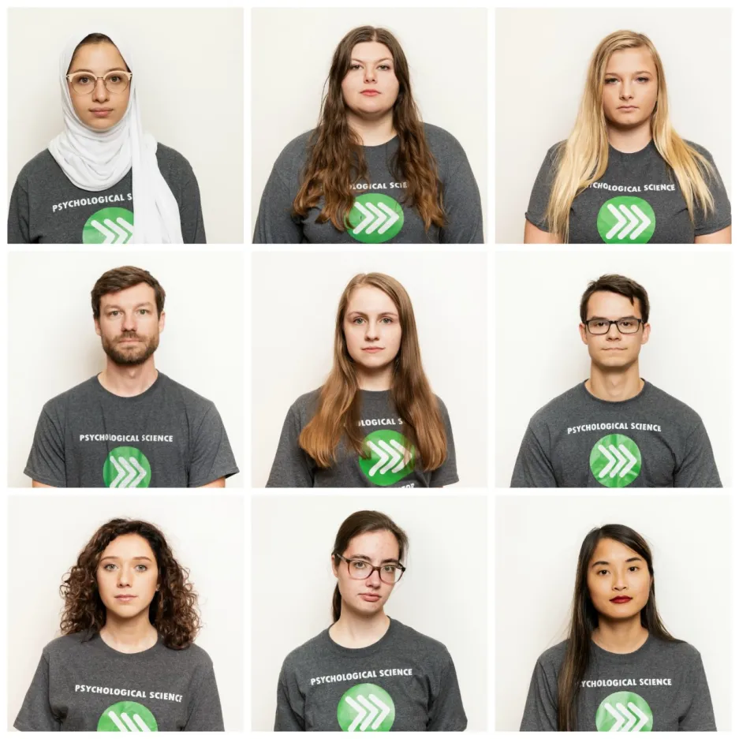

Projects
-

- Proposers: Benedict C. Jones,Lisa M. DeBruine
- Project Manager: Nicholas A. Coles
- Methodologist: Jessica K. Flake
- Data Manager: Patrick Forscher
- Translation: Janis Zickfeld
- Ethics: Marietta Papadatou-Pastou,Anna van ‘t Veer
PSA001: Face Perception
Over the past 10 years, Oosterhof and Todorov’s valence–dominance model has emerged as the most prominent account of how people evaluate faces on social dimensions. In this model, two dimensions (valence and dominance) underpin social judgements of faces. Because this model has primarily been developed and tested in Western regions, it is unclear whether these findings apply to other regions. We addressed this question by replicating Oosterhof and Todorov’s methodology across 11 world regions, 41 countries and 11,570 participants. When we used Oosterhof and Todorov’s original analysis strategy, the valence–dominance model generalized across regions. When we used an alternative methodology to allow for correlated dimensions, we observed much less generalization. Collectively, these results suggest that, while the valence–dominance model generalizes very well across regions when dimensions are forced to be orthogonal, regional differences are revealed when we use different extraction methods and correlate and rotate the dimension reduction solution.
-

- Proposers: Sau-Chin Chen
- Project Manager: Jeremy Miller
- Methodologist: Anna Szabelska
- Data Manager: Abby Noyce
- Translation: Ilker Dilgar
- Ethics: Erica Musser
PSA002: Object Orientation
Mental simulation theories of language comprehension propose that people automatically create mental representations of real objects. Evidence from sentence-picture verification tasks has shown that people mentally represent various visual properties such as shape, color, and size. However, the evidence for mental simulations of object orientation is limited. We report a study that investigates the match advantage of object orientation across speakers of different languages. This multi-laboratory project aims to achieve two objectives. First, we examine the replicability of the match advantage of object orientation across multiple languages and laboratories. Second, we will use a mental rotation task to measure participants’ mental imagery after the sentence-picture verification task. The relationship between the participants’ performance of the two tasks will provide a cross-linguistic examination of perceptual simulation processes. With the (broad) evaluation of individual mental imagery ability and potential linguistic moderators, we expect a robust estimation of match advantage of object orientation.
-
- Proposers: Curtis Phills
- Project Manager: Jeremy Miller
- Methodologist: Zoltán Kekecs,Erin Buchanan
- Data Manager: Abby Noyce
- Translation: Janis Zickfeld
- Ethics: Erica Musser
PSA003: Gendered Prejudice
When asked to imagine a person, people tend to think of a man (Hamilton, 1991). The same is true for some social groups as well–when asked to imagine a Black or White person, people tend to imagine a Black or White man (Schug, Alt, & Klauer, 2015). One reason for this is androcentrism: the belief that men are the default and women the exception or “other” (Bailey, LaFrance, & Dovidio, 2018; Bem, 1993; Smith & Zarate, 1992).The present research will use a global distributed laboratory network to describe the gendered nature of prejudice against seven social categories (i.e., Black people, East Asian people, White people, police, politicians, and criminals). We hypothesize that if a prejudice occurs for the group it is more strongly related to prejudice of the men of that social category. This study will be across several laboratories and languages as it is paired with PSA 002 for data collection.
-
- Proposers: Braeden Hall,Jordan Wagge
- Project Manager: Jordan Wagge
- Methodologist: Braeden Hall
- Data Manager: Dan Dunleavy
- Translation: Jan Philipp Röer
- Ethics: Erica Musser
PSA004: True Belief
According to the Justified True Belief (JTB) account of knowledge, a person’s ability to know something is defined by having a belief that is both justified and true (i.e., knowledge is justified true belief). However, this account fails to consider the role of luck. In 1963, Gettier argued that JTB is insufficient because it does not account for certain situations, called Gettier cases, wherein a person is justified for believing something true but only because of luck. It is unclear whether lay people’s intuitions about knowledge lead them to agree with Gettier, such that lay people believe that individuals in these cases lack knowledge (referred to as Gettier intuitions). We attempt to provide a robust estimate of the Gettier intuition effect size by replicating Turri and colleagues’ (2015) Experiment 1. The Collaboration Replications and Education Project (CREP) selected this study for replication based on its undergraduate appeal, feasibility, and pedagogical value. However, in light of some inconsistent results, suboptimal designs, and inconsistent evidence for cultural variation (e.g., Machery et al., 2015; Nagel, et al., 2013; Seyedsayamdost et al., 2015; Starman & Friedman, 2012; Weinberg et al., 2001), the improved methodology of Turri et al. (2015) make it an important study to replicate cross-culturally. Therefore, we propose a multisite Collaboration preregistered replication of Turri and colleague’s (2015) Experiment 1 (35 labs from 14 countries across 4 continents signed up at time of submission; expected minimum N = 1,500). Results of this study are expected to provide a clearer picture of the Gettier intuition effect size, lay people’s theory and practice of knowledge, and potentially cross-cultural similarities and differences.
-
- Proposers: Patrick Forscher,Valerie Jones Taylor,Neil A. Lewis, Jr.,Daniel Cavagnaro
- Project Manager: Bharathy Premachandra
- Methodologist: Daniel Cavagnaro
- Data Manager: Erin Buchanan
- Translation:
- Ethics: Kim Peters
PSA005: Stereotype Threat
According to stereotype threat theory, the possibility of confirming a negative stereotype provokes feelings of threat, leading people to underperform on the very tasks on which they are stereotyped. This theory has immense theoretical and practical implications, but many studies supporting it suffer from small samples and varying operational definitions of stereotype threat. For the first problem, we propose to leverage the Psychological Science Accelerator’s vast network of US-based labs to recruit a large sample of African American students to participate in a test of stereotype threat theory. For the second problem, we propose to use an adaptive design to find, among four procedures each to increase and reduce stereotype threat, the comparison that provides the best evidence for an effect. By assessing the robustness of a socially and scientifically important theory with a rare population, this proposal will advance both psychological science and the Accelerator’s core mission.
-
- Proposers: Bence Bagó,Balazs Aczel
- Project Manager: John Protzko
- Methodologist: Zoltán Kekecs,Rink Hoekstra
- Data Manager: Márton Kovács,Tamas Nagy
- Translation: Chuan-Peng Hu
- Ethics: Gerit Pfuhl
PSA006: Trolley Problem
Research on moral reasoning is centered around moral dilemmas in which deontological perspectives (emphasizing individual rights) are in conflict with consequentialist reasoning (also referred to as utilitarian; following the greater good). A central finding of this field is that people in certain situations are more likely do go with deontological considerations, while in other cases they are more likely to decide based on consequentialist reasons. In their seminal article, Greene et al. (2009) tried to investigate the effect of situational and psychological factors (e.g., intent of the agent, or physical contact between the agent and victim) on people’s moral decisions, but their work could not explore the effect of a potentially important component: culture. Therefore, the goal of the present research proposal is to empirically test the universality of utilitarian and deontological responding by directly replicating Greene et al.’s experiments on non-WEIRD samples as well as to explore the influence of culture and economic status on moral reasoning.
-
- Proposers: Erin Buchanan
- Project Manager: Kelly Cuccolo
- Methodologist: Niels van Berkel
- Data Manager: Niels van Berkel
- Translation: Aishwarya Iyer
- Ethics: Kim Peters
PSA007: SPAM-L
Semantic priming has been studied for nearly fifty years across various experimental manipulations and theoretical frameworks. Critically, the understanding of semantic priming relies on reliable, well-studied stimuli with defined similarity values. In the last twenty years, the publication rates of normed stimuli databases and corpora (i.e., large bodies of text) has exponentially increased. Further, newer computational models of concept representation have been detailed using these databases. Using these newer models, we can define similarity between concepts to create reliable stimuli for study in semantic priming. In this proposal, we outline the need for a database of semantic priming values, particularly in non-English languages. We detail the process for creating a large database of priming values, from which new theories and hypotheses can be examined. Further, we describe the novel outputs that this proposal will support including a framework for determining sample size for studies of this nature.
-
- Proposers: Xin (Kate) Yang,Yarrow Dunham,Jonathan Schultz
- Project Manager: Kathleen Schmidt,Anna Exner
- Methodologist: Adam Kenney
- Data Manager: Adam Kenney
- Translation: Ilker Dalgar
- Ethics: Biljana Gjoneska,Gerit Pfuhl
PSA008: Minimal Groups
Random assignment to experimentally created and otherwise meaningless social groups is sufficient to create ingroup preference. This striking phenomenon, now referred to as the minimal group effect (MGE), has theoretical importance for explaining in-group biases and practical implications for anti-bias interventions. However, due to small and culturally restricted samples, as well as insufficient attention to moderators, the extent to which the MGE is a somewhat specialized or restricted phenomenon, or whether it can be considered a general human universal that underlies culturally salient forms of real-world bias, remains unknown. We aim to recruit a large sample of participants across cultures through the Psychological Science Accelerator (PSA)’s vast network to test the cultural prevalence of the MGE and to compare it to two forms of real-group bias (bias in favor of family members and bias in favor of national ingroups). We will examine the underlying mechanisms of the ingroup bias by testing the relationship between these forms of bias and a number of theoretically important individual- and cultural-level moderators.
-
PSACR001: Loss Gain
The COVID-19 pandemic presents a critical need to identify best practices for communicating health information to the global public. It also provides an opportunity to test theories about risk communication. As part of a larger Psychological Science Accelerator COVID-19 Rapid Project, a global consortium of researchers will experimentally test competing hypotheses regarding the effects of framing messages in terms of losses versus gains. We will examine effects on three primary outcomes: intentions to adhere to policies designed to prevent the spread of COVID-19, opinions about such policies, and the likelihood that participants seek additional policy information. Whereas research on negativity bias and loss aversion predicts that loss-framing will have greater impact, research on encouraging the adoption of protective health behaviour suggests the opposite (i.e., gain-framing will be more persuasive). We will also assess effects on experienced anxiety. Given the potentially low cost and the scalable nature of framing interventions, results could be valuable to health organizations, policymakers, and news sources globally.
-
PSACR002: Cognitive Reappraisal
The COVID-19 pandemic is eliciting intense and prolonged negative emotions that may detrimentally affect health and well-being globally. To enhance resilience, we will teach participants around the world to use a widely studied and generally adaptive form of emotion regulation—cognitive reappraisal—to reduce negative emotions and increase positive emotions. We will randomly assign participants to one of three reappraisal interventions (reconstrual, repurposing, and their hybrid) or a control condition. We predict that relative to the control condition, reappraisal will reduce immediate and anticipated negative emotions, increase immediate and anticipated positive emotions, and enhance emotion regulation self-efficacy. Importantly, we expect reappraisal to reduce intentions to engage in emotion-driven problematic behaviors (e.g., substance use) without reducing intentions to engage in healthy behaviors. Results will inform efforts to create a scalable intervention that governments, organizations, and citizens around the world can employ in order to build emotional resilience during the pandemic and beyond.
-
PSACR003: Self Determination
In order to slow the transmission of COVID-19, governments around the world are asking their citizens to participate in social distancing, that is, to stay at home as much as possible. In most countries, individuals have some choice over whether or not they follow recommendations for social distancing. Thus, understanding how to best motivate social distancing has become a critical public health priority. This study tests, in a confirmatory manner, whether self-determination theory-guided message framing impacts people’s motivation to participate in social distancing. Specifically, we expect autonomy-supportive messages that help people understand the value of behavior change to a) increase ‘buy in’, or autonomous motivation, for social distancing, b) lower feelings of defiance to follow recommendations around social distancing, and c) increase feelings of self-efficacy to participate in social distancing, relative to neutral and controlling messages. Further, we expect controlling messages that pressure people to change using shame, guilt, and threats, may backfire and a) decrease ‘buy in’ for social distancing and b) increase defiance, relative to the control condition. Exploratory tests will examine whether the effects of message framing on motivation and defiance extend to behavioral intentions and long-term commitment. This work has direct relevance for how public officials, health professionals, journalists, and others can communicate about solving this and future public health crises in ways that motivate people more effectively.